"Um lar feliz começa com um novo amigo. Adote um gato e complete a sua família."
Adotados do mês
- 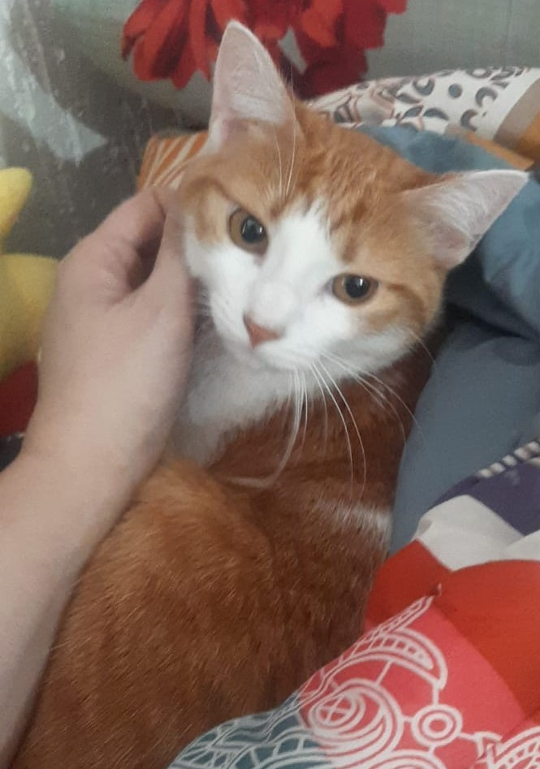 Zaya
- 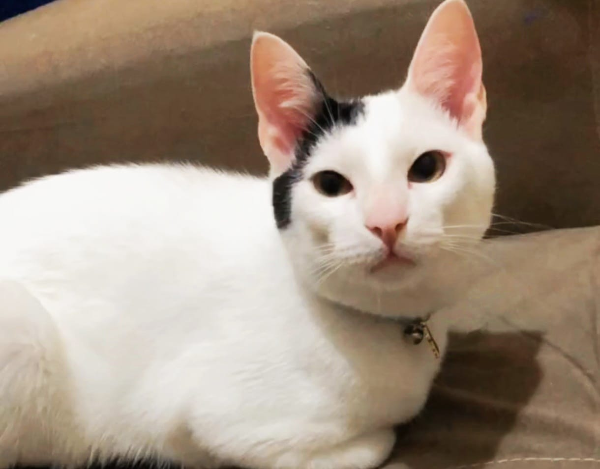 Eros
- 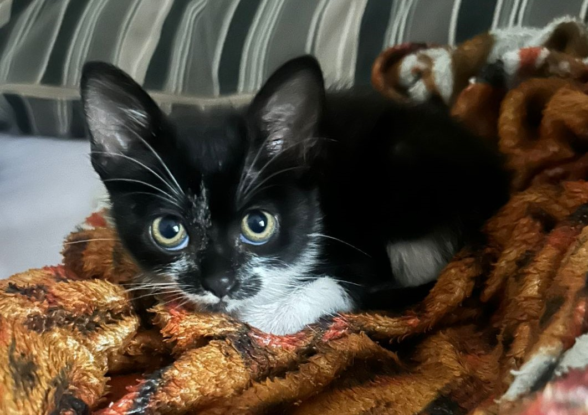 Ravena
- 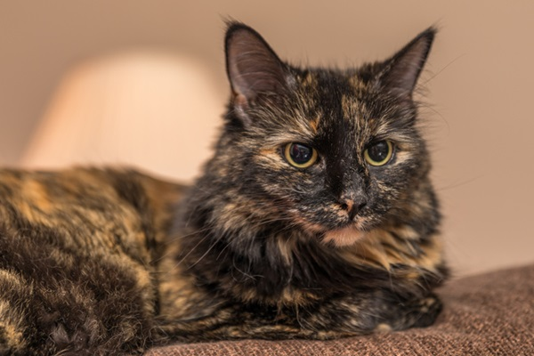 Cosmos
- 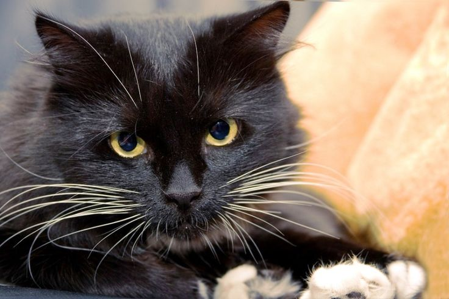 Yori
- 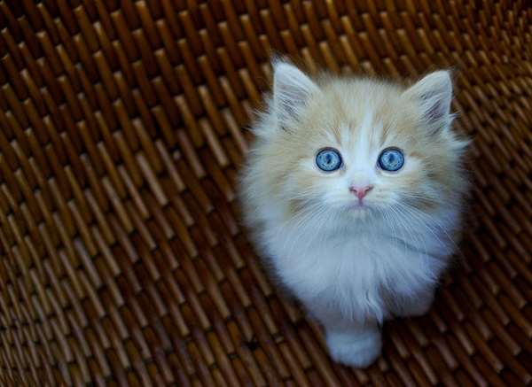 Blue
- 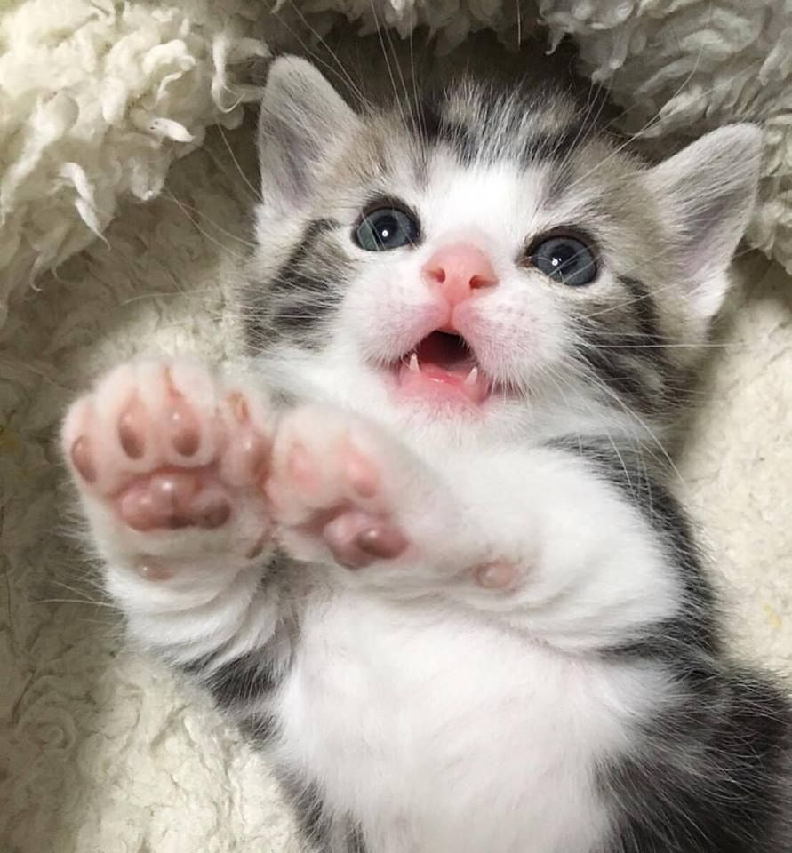 Olivia
Me adota
- 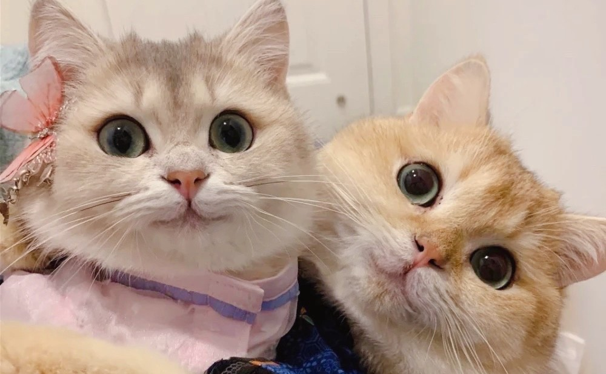 Isis & Vênus-Adoção Conjunta
- 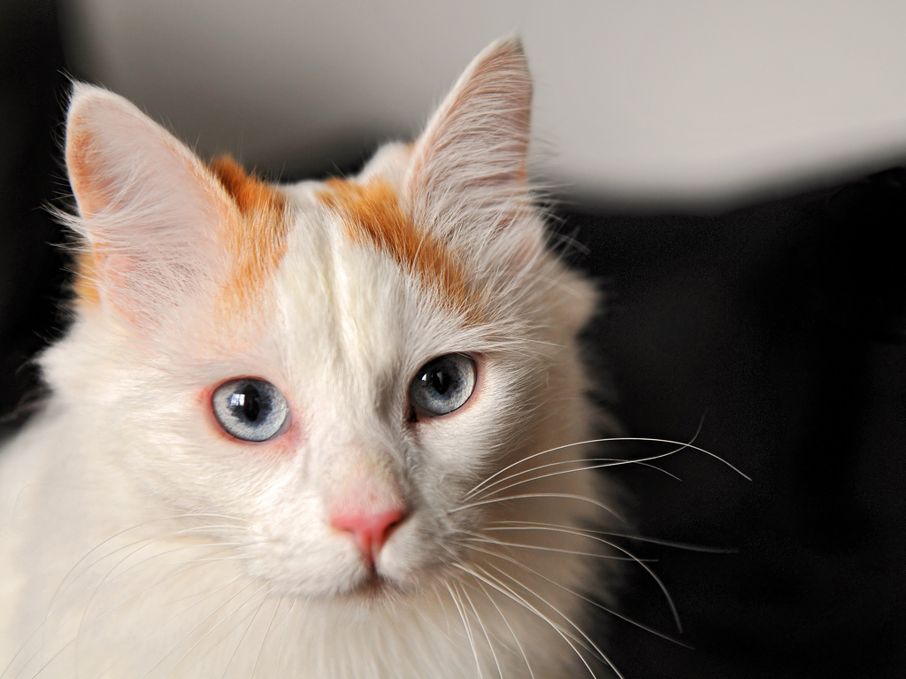 Oliver
- 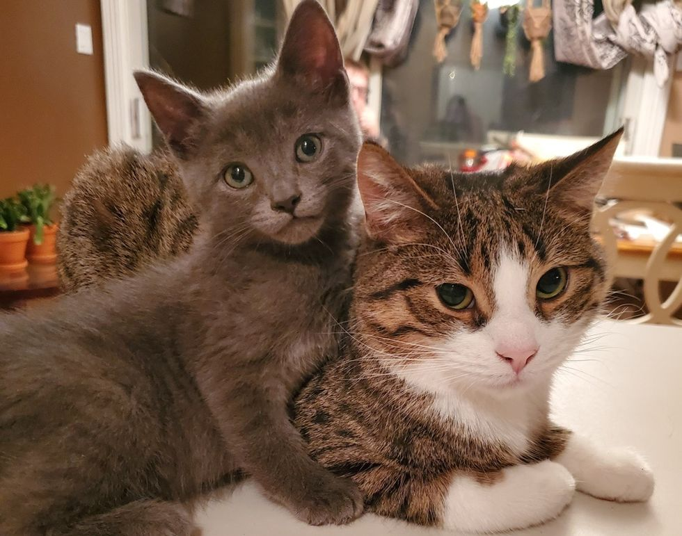 Zeca & Edy -Adoção Conjunta
- 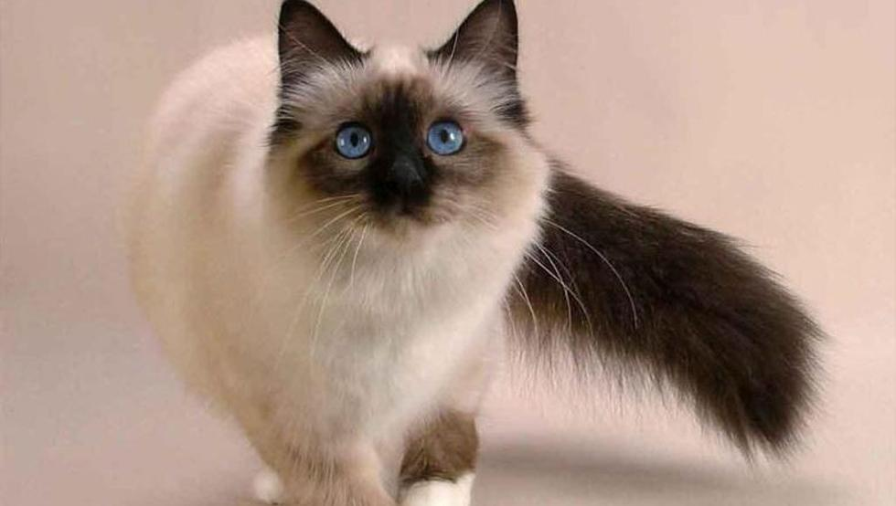 Lorenzo
- 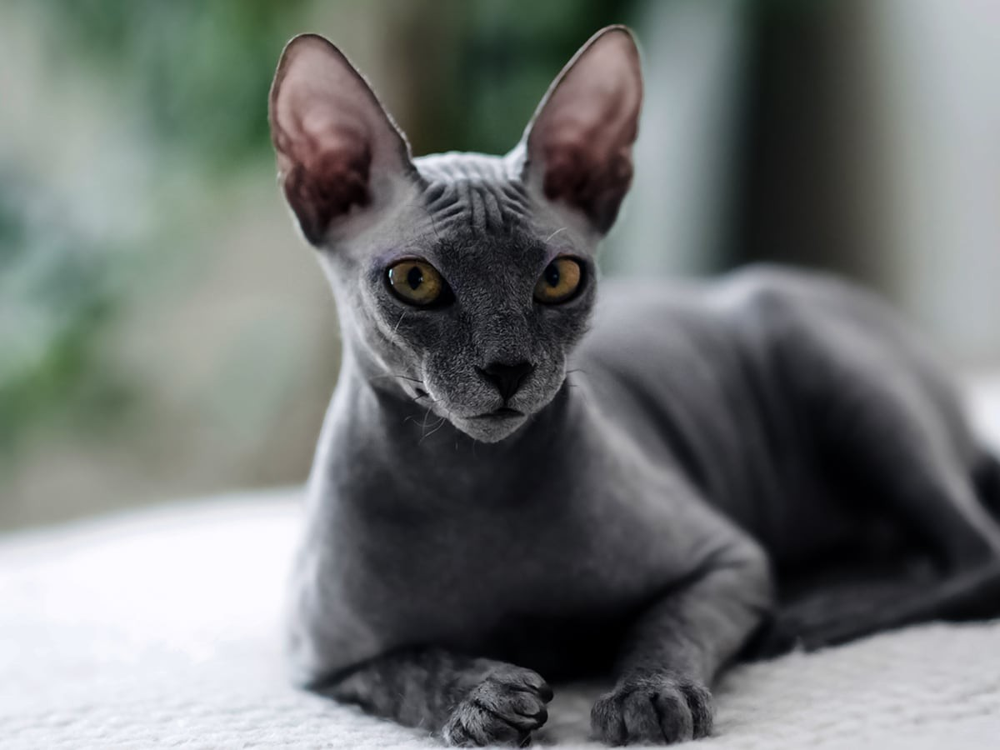 Vaghar